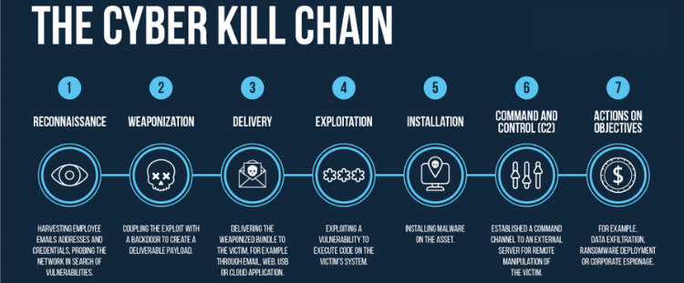

An introduction to the basic steps of a cyberattack
Many new to the field of cybersecurity think of recon, exploitation, and command and control as isolated terms. This site organizes them into a coherent framework so readers can understand how each stage dovetails into the next and how defenders can prevent attackers from reaching the next step.
